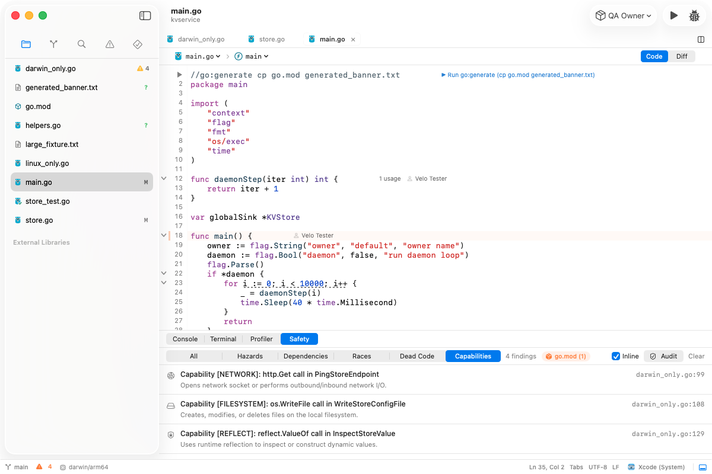

Giám Sát Đặc Quyền NETWORK, EXEC, FILESYSTEM & UNSAFE
Lấy cảm hứng từ Google Capslock, GoLens's Safety pane chỉ rõ hàm nào trong dự án hoặc dependency đang mở kết nối mạng (http.Get), chạy tiến trình hệ điều hành (exec.Command) hay dùng con trỏ không an toàn.
